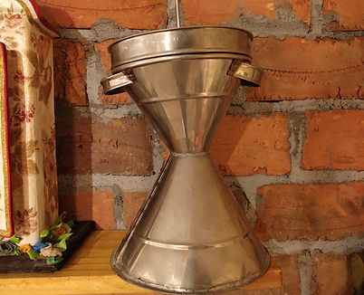
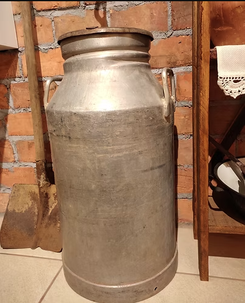
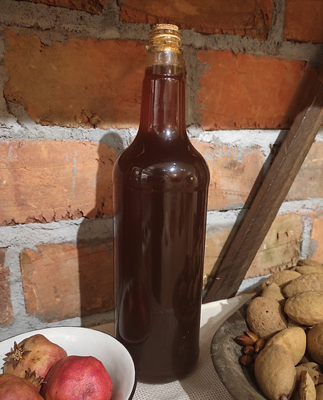

Acervo de Saberes e Objetos
1. Utensílios e Equipamentos de Cozinha

Cuscuzeiro artesanal
Doada por Daniel Sampaio, único artesão de funilaria em Pirapora-MG. O cuscuzeiro é um vasilhame utilizado para fazer o cuscuz de milho, comida típica da culinária nordestina e também norte-mineira.

Panela fritadeira com alças
Item de cozinha doado por Moisés, natural de Pirapora/MG.

Chaleira de ferro
Os itens de ferro são tracionais e aparecem na maioria dos relatos das pessoas locais. Esta chaleira de ferro, doada pela piraporense Neide Ferreira, simboliza bem essa tradição.

Coador e bule de café 2
Itens para fazer café. Depois de passar o grão de café no moedor, coloca-se a água para ferver no bule. O pó do grão moído é colocado no coador e passa-se a água quente.

Colher de pau
Doada por Geralda Conceição de Melo Braga, natural de Buritizeiro, cozinheira e quitandeira. A colher de pau é usada para mexer a comida.

Fogão de lenha com forno 1
Réplica de fogão à lenha, produzida por Everton Morais, marceneiro piraporense.

Gamela de madeira 1
As gamelas de madeiras são resistentes e duram por anos a fio. Estão tradicionalmente presentes nas cozinhas da região.

Moedor manual de café 2
Moedor de ferro batido usado para moer grãos de café para ser coado na hora. O cheiro depois da moagem recende em todo o ambiente.

Panela com frase ‘Domingo é dia de frango caipira’ 2
As panelas de ferro eram itens fáceis e acessíveis. O ferro retém o calor da comida.

Panela de Barro
A panela de barro é um item tradicional nas cozinhas barranqueiras, pois nela cozinha-se o peixe. Doada por Geralda Conceição.

Panela esmaltada
Tal qual as panelas de ferro, os vasilhames esmaltados também eram comuns em casas mais humildes da região.

Peneira de palha
As peneiras de palha serviam para separar a casca do grão de arroz, depois de pilado.

Pilão de tempero em madeira
O pilão de madeira possui duas partes: o corpo e o soquete. Serve para triturar alho e ervas frescas.

Pilão de tronco de árvore
Bem maior que o convencional, é utilizado para fazer paçocas, corante ou pilar milho.

Ralo de metal
Objeto resistente usado para ralar milho (para curau e pamonha), mandioca para beiju ou coco.

Xícaras de aço esmaltado
Xícara esmaltada doada por Luciana Galiza. Pertencia à sua bisavó, conhecida como mãe Lió.

Leiteira
Objeto doado por Moisés. Utilizada para armazenar o leite que era entregue de porta em porta.

Potes de condimento 2
Latas ou vidros para conservar alimentos secos e temperos (corante, cravo, sal, canela).
2. Alimentos, Temperos e Remédios Naturais

Baru
Fruto do baruzeiro, árvore vital para o Cerrado. A castanha pode ser consumida crua ou torrada.

Farinha 2
Alimento coringa na mesa brasileira. Usada pura ou em receitas como pirão e paçoca.

mel
Usado para curar gripes e resfriados. Ingrediente de xaropes caseiros e garrafadas.

Conserva de pimenta
Condimento essencial na culinária norte-mineira. Preparada por Celme Silveira Macedo.

Molho de ervas
Maços pendurados para secagem, facilitando o uso em chás e temperos.
 2.png)
Pequis (réplica) 2
O "ouro do cerrado". Fruto altamente nutritivo comido cozido com arroz ou em doces.

Réstia de alho
Cordão de alhos trançados. Popularmente conhecida por espantar mau-olhado.

Xarope de Umbigo de banana 2
Feito com o "coração" da bananeira, mel e ervas. Recomendado para tosse e asma.
3. Religiosidade e Fé

Oratório na cabaça porongo
Altar construído dentro de uma cabaça pelo artesão João Henrique.

Oratório II
Confeccionado por Maria Alice para o grupo "Terço da Família" em Buritizeiro.

Presépio na cabaça porongo
Representação do nascimento de Jesus organizada dentro de uma cabaça tratada.
4. Cultura, Música e Tradição

Arco de São Gonçalo
Usado nas danças do grupo de Seo Arquileu. Herança de Pernambuco.

Berimbau
Símbolo da capoeira, herança africana. Doado pela Mestra Luciana Galiza.

Cincerro
Pequeno sino usado no pescoço do gado para guiar o rebanho.

Moringa de barro 1
Doada por Terezinha Galiza. O barro mantém a água fresca e filtrada naturalmente.
5. Mobiliário e Decoração

Estante de madeira
Móvel rústico produzido pelo marceneiro Everton Morais.

Forros de prateleira
Trabalho manual em ponto cruz e crochê feito por Vera Ferreira.